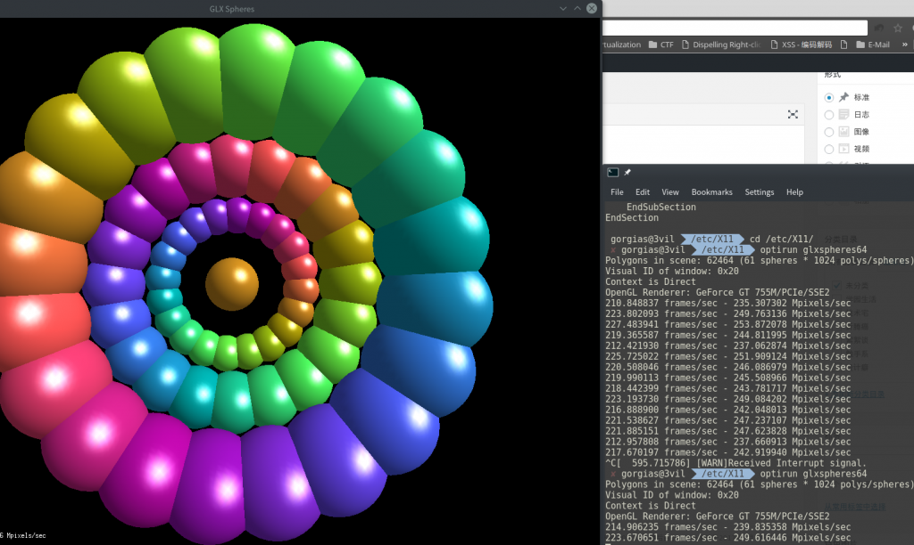

前言
我的笔记本电脑是联想Y410P，双显卡GT755M + HD4600。以前在Debian上安装NVIDIA闭源驱动也没成功过，在Arch Linux上也没成功过，只好使用Nouveau驱动。 但是这一次需要使用hashcat跑字典，hashcat不支持Nouveau，只能使用闭源驱动。
以前都是玄学安装，一头雾水地安装，网上也没有找到解决办法。这一次特意折腾了一下，希望能帮助有需要的人。
分析失败原因
一般安装NVIDIA闭源驱动最后会提示生成xorg.conf，这一步非常关键，如果同意生成，重启后会黑屏，不能进入桌面。
根据情况不同，会出现以下错误的一种或多种
- Error: couldn’t get an RGB, Double-buffered visual
- ERROR: ld.so: object ’libdlfaker.so’ from LD_PRELOAD cannot be preloaded: ignored
- SDDM服务启动失败
- /var/log/Xorg.0.log 提示 (EE) No devices detected. (EE) no screens found(EE)* /var/log/Xorg.0.log 提示 Cannot establish any listening sockets - Make sure an X server isn’t already running
前两个错误是因为安装顺序不正确，导致文件冲突然后缺失。 不要使用官网的二进制安装包！！！ Xorg server不能启动是xorg.conf配置的问题。一种是Xorg server不能启动，导致SDDM服务启动失败，还有一种是Xorg server启动成功，仍然黑屏的情况。 xorg.conf是对linux X window系统的配置文件，主要保存鼠标、键盘、显示器以及显示卡等设备的配置信息。文件由数个Section/EndSection的区块组成，而每个区块的格式如下：
Section "Section名称"
选项名称 "选项值"
选项名称 "选项值"
…
EndSection
Xorg.conf配置特别反人类，看着都头晕，这个不会自己去配置的。
一般情况下，在安装Arch Linux的时候都是先安装集显驱动，再安装独显驱动，xf86-video-intel。
可能还会运行这条命令在/etc/X11/目录下生成配置文件。
Xorg -configure
使用集显时，可以不需要xorg.conf，需要微调时才会用到。但是使用独显时，必须要配置xorg.conf，不然会出现各种错误导致Xorg server不能运行，或者是运行后出各种问题。
这里的显卡切换解决方案是Bumblebee，也听说过一个空格引发的血案。据说nvidia-prime要更好，但是得折腾xorg.conf，先略过。
开始安装
现在要正常使用桌面，没有独显驱动的状态，请参考Arch Wiki上的Installing Bumblebee with Intel/NVIDIA教程安装，一定要保证能正常进入桌面才能进行接下来的安装
安装以下内容
sudo pacman -S bumblebee bbswitch
把用户添加到bumblebee用户组
sudo gpasswd -a gorgias bumblebee
开启bumblebeed.service服务
sudo systemctl enable bumblebeed.service
这里顺序要注意，NVIDIA驱动要先安装，不然会和某些库文件冲突导致开机黑屏，或者因为缺少32位库导致VMWare不能使用GPU
sudo pacman -S bumblebee nvidia opencl-nvidia lib32-nvidia-utils lib32-opencl-nvidia mesa lib32-mesa-libgl xf86-video-intel
配置bumblebee
sudo vi /etc/bumblebee/bumblebee.conf
-----------------------------------------
这一个不要auto，指定nvidia
Driver=nvidia
电源管理指定bbswitch
[driver-nvidia]
PMMethod=bbswitch
然后重启，可以进入桌面，检测一下是否能启用独显
安装测试工具
sudo pacman -S glxspheres32 glxspheres64
然后运行
glxspheres32
glxspheres64
optirun glxspheres32
optirun glxspheres64
很完美 
添加未识别分辨率
我的笔记本在Linux下使用VGA接口不能正常识别最高分辨率，照网上教程使用cvt也不能生成能用的显示参数。 为此伤透脑筋，去年买了一根黄刀的DVI转HDMI线才解决。 但是好景不长，16年年底，笔记本电脑HDMI接口坏了，于是继续折腾。
首先解决不能生成可用显示参数的问题，非CRT显示器需要加上-r参数，参考CVT Timings Program
Reduced Blanking - Timings for LCD flat panels and other monitors that do not require long blanking intervals as a retrace period. CRTs require this because the electron beam takes time to horizontally resteer to the other side of the monitor.
usage: cvt [-v|--verbose] [-r|--reduced] X Y [refresh]
-v|--verbose : Warn about CVT standard adherance.
-r|--reduced : Create a mode with reduced blanking (default: normal blanking).
X : Desired horizontal resolution (multiple of 8, required).
Y : Desired vertical resolution (required).
refresh : Desired refresh rate (default: 60.0Hz).
Calculates VESA CVT (Coordinated Video Timing) modelines for use with X.
最后执行这段命令就能得到可用显示参数
$ cvt -r 1920 1080
Modeline "1920x1080R" 138.50 1920 1968 2000 2080 1080 1083 1088 1111 +hsync -vsync
先来一个错误的解决方法，脚本文件/etc/rc.d/afterx，这段代码比较尴尬，不能执行太早也不能太晚，只好把脚本路径放在/usr/share/sddm/scripts/Xsetup才解决，但是登录界面的DPI存在问题
#!/bin/sh -e
#Fix VGA resolution
xrandr --newmode "1920x1080R" 138.50 1920 1968 2000 2080 1080 1083 1088 1111 +hsync -vsync
xrandr --addmode VGA1 "1920x1080R"
xrandr --output VGA1 --mode "1920x1080R"
其实在xorg配置文件里就能完美解决，参考Monitor Settings，Section的含义可以参考Wiki。
/etc/X11/xorg.conf.d/10-monitor.conf
--------------------------------------
Section "Monitor"
Identifier "VGA1"
Modeline "1920x1080R" 138.50 1920 1968 2000 2080 1080 1083 1088 1111 +hsync -vsync
Option "PreferredMode" "1920x1080R"
EndSection
Section "Screen"
Identifier "Screen0"
Monitor "VGA1"
DefaultDepth 24
SubSection "Display"
Modes "1920x1080R"
EndSubSection
EndSection
Section "Device"
Identifier "Device0"
Driver "intel"
EndSection
这里说一下如何配置，Driver这里设成独显的驱动intel。 Identifier可以使用xrandr查看，查看Monitor,Screen
xrandr
xrandr --listmonitors